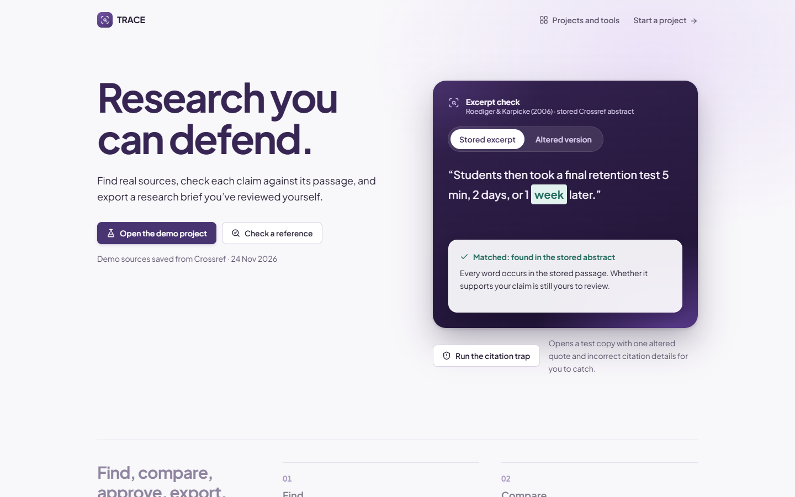
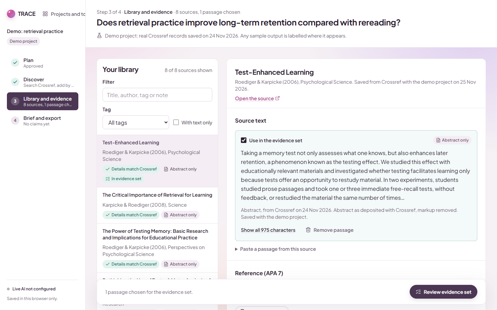
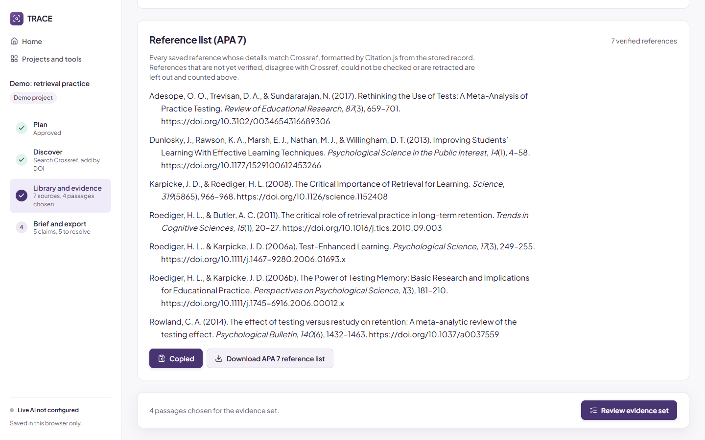
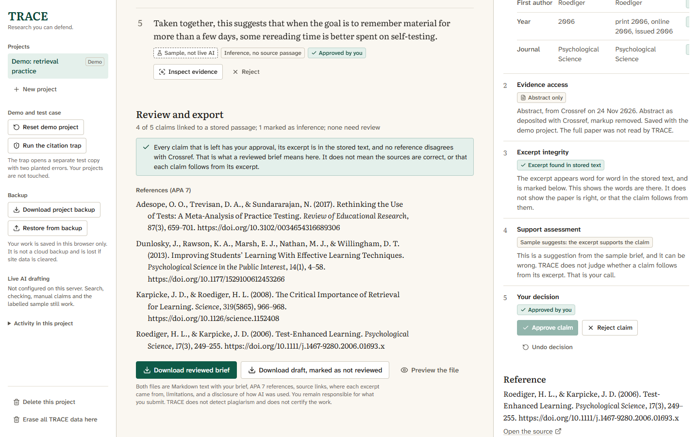
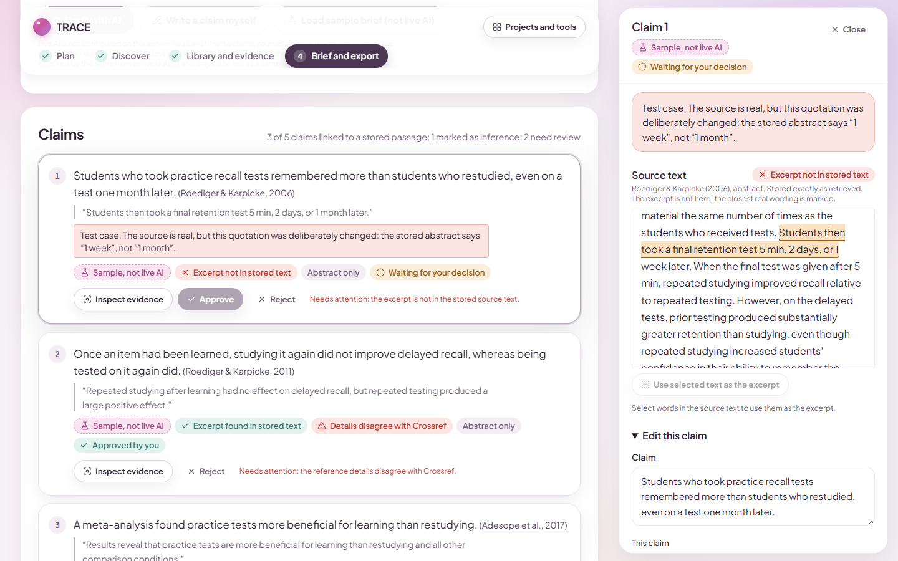
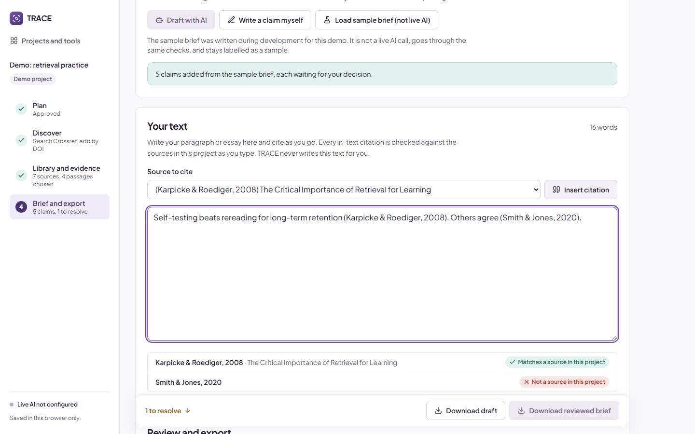

AI Club Hackathon 2026 · SP Jain · Presenter guide
TRACE
Research you can defend.
Everything you need to understand TRACE, run the demo and answer the judges, without reading the code.
Updated 26 November 2026 for the final release. Section 2 lists what is new since the first version.
Team: Atharva, Maitrayee, Shirley
Live site: {{LIVE_LINK}}
Code: github.com/mercydeez/trace-hackathon
Event: Thursday 26 November 2026, arrive 1:15 PM, Simulation Lab, 2nd floor. Demo is 8 minutes plus 2 minutes of questions, strictly timed.
If you remember one sentence: “A real DOI does not make a claim supported.”
Contents
- The 60-second version
- New in the final release
- The problem we were given, and how we are scored
- The big idea: five questions and the trust labels
- A tour of the app
- How it works underneath (plain language)
- The guardrails
- The demo, minute by minute, with a suggested speaker split
- Judges’ questions and good answers
- What we never say, before you walk up, if something breaks
- Glossary and quiz revision
1
The 60-second version
Students use AI to write assignments. AI tools make four kinds of citation mistakes: they give a real author the wrong paper, cite a DOI that does not exist, quote a sentence that is not in the source, or state a guess as a fact. The student is blamed for every one.
TRACE is a website that is two things at once: a reference manager (find, save, tag and cite real papers) and a careful AI research assistant (it drafts short claims, but only from passages the student approved).
What makes it different: most checkers stop at “does this DOI exist?”. TRACE asks five separate questions about every claim and never merges them into one green tick. The student approves each step, and a single export gate blocks the final brief until every problem is fixed.
The student’s journey, in four steps
1Plan: write the question; TRACE suggests search terms (by a simple rule, not AI); the student approves.
2Discover: search Crossref (the official registry of scholarly papers), check a DOI, or check a pasted reference list. Checking never changes the library: only an Add button does.
3Library and evidence: organise sources with tags and notes; copy the whole library as an APA 7 reference list; tick the passages the AI may use; approve that evidence set.
4Brief and export: AI drafts up to five claims (or the student writes them); every claim is checked; the student approves each one; the student writes their own text with citations checked as they type; export the brief in APA 7 or Harvard, copy a short AI-use statement, and download a verification report.
Why judges should care
- The checks are tested automatically. 214 unit tests and 22 production browser journeys passed on the final release.
- The “citation trap” in the demo is not scripted. It is a copy of the project with two planted mistakes, and the same checks catch them live.
- It is honest about its limits: it reads abstracts, not full papers, and says so everywhere.
2
New in the final release (26 November)
If you read the first version of this guide, these are the changes. Each one is live on the site and covered by automated tests.
| What | Where to see it | What to say |
|---|
| Checking is read-only | Welcome → Check a reference, or Discover → By DOI / Check a list | “Checking only reads the registry. Nothing reaches the library until I click Add. A fake DOI or an unrelated match has no Add button at all.” |
| Wrong details need a deliberate fix | Check a real DOI with the wrong year | “The only way to add it is Use Crossref’s details and add. What I typed is never saved over the registry.” |
| Trust labels and a legend | “What the labels mean” in Discover, Library and Brief | “Every reference and claim carries labels. Each one is evidence about one check only.” |
| DataCite fallback | Check DOI 10.5061/dryad.8515 (a dataset) | “Crossref is asked first. If it has no record, TRACE asks DataCite and says Found in DataCite.” |
| APA 7 reference list | Library → Copy APA 7 reference list or Download | “The whole library as an APA 7 list. Unverified references are left out and counted.” |
| AI-use statement | Brief → Copy AI-use statement | “It counts what AI drafted and what I kept separately: AI drafted three claims. I approved and included two and rejected one.” |
| Verification report | Brief → Verification report, beside the export buttons | “One page from the same checks as the export gate: each reference, quote check and decision, and whether the reviewed brief can be downloaded.” |
| Clear export status | The bar at the bottom of Brief | “It says exactly why the reviewed brief isn’t ready: open points, references still formatting, or formatting failed with a Retry.” |
| Inspector shows why | Citation trap → Inspect claim 1 | “A red box says what blocks the export, and my quote sits beside the real sentence with the wrong word highlighted.” |
| Home and Resume | Home link or the TRACE logo, then Resume project | “Home is always one click away, and Resume brings back the same project and step.” |
Some labels were renamed: AI suggestion (was “AI draft”), Student approved (was “Approved by you”), Not yet verified (was “Entered by hand, not checked”). The browser tab now reads “TRACE | Research you can defend”, with a TRACE icon.
3
The problem we were given, and how we are scored
The organisers asked for a website that helps researchers manage references and cite honestly, and that also works as an AI research assistant: the organisation of a reference manager plus the speed of AI, without invented references. The student must be able to trust that every reference is real and every claim traces to its source, and must stay in charge of final decisions.
What the judges score on the day (Phase 2, 65 points)
| Criterion | Points | Where TRACE earns it |
|---|
| Working MVP | 15 | The whole journey runs end to end on the live site: plan → search → library → evidence → claims → inspect → export. |
| Research and citation features | 12 | Live Crossref search with a DataCite fallback, check a DOI or a pasted reference list, tags/notes/filters, a Library APA 7 reference list, writing space with citation checks, APA 7 or Harvard, retraction flags, a verification report. |
| Honesty and verification in action | 10 | A fake DOI gets no Add button. The citation trap: a changed number in a quote and wrong reference details are both caught and block export. The AI-use statement counts what AI drafted and what was kept. |
| Day-of requirements | 8 | “Rules in force” and one-file-per-feature design make new requirements quick to add. See section 10. |
| User experience | 8 | Four numbered steps with live status; a legend for every label; Home and Resume; an export bar that says exactly why the reviewed brief isn’t ready yet. |
| Presentation and Q&A | 12 | Clear demo, strong answers, every member speaks. |
Also scored: the Phase 1 deck (30 points, judged before the event) and a team AI quiz (5 points, 3:15 PM).
“Every member contributes” is part of the 12 presentation points. Both of you speak in the demo and both of you take questions. Be honest about roles if asked (see section 9).
4
The big idea: five questions and the trust labels
A typical checker gives one “Verified” badge. That hides the real problem: a paper can be real and still not say what the student claims. TRACE answers five different questions for every claim and shows each one on its own.
| # | Question | How TRACE answers it | Who decides |
|---|
| 1 | Reference identity: is this the paper we say it is? | Compares the cited title, first author’s surname and year with the registry record for that DOI (Crossref, or DataCite when Crossref has none). Shows each disagreement. | Code |
| 2 | Evidence access: what text do we actually have? | Abstract, a passage the student pasted, or nothing. Always labelled. | Code |
| 3 | Excerpt integrity: is the quoted sentence really in that text? | Exact text match. Numbers and “not” must match too. The real passage is highlighted. | Code |
| 4 | Support: does the quote back up the claim? | Only the AI’s suggestion, labelled “AI-suggested, can be wrong”. TRACE never scores it itself. | AI (fallible) |
| 5 | Student decision: did the student approve this? | Pending, approved, rejected, or stale if anything changed after approval. | Student |
Three rules that make it trustworthy
- The AI can never write a reference. References are built by a citation formatter (Citation.js) from registry data. The AI’s answer has no field for a title, author or DOI, and an answer containing one is rejected.
- The AI can only cite approved evidence. Each passage has an ID. If the AI cites any other ID, that claim is rejected and shown as rejected.
- Approvals expire when content changes. TRACE stores a fingerprint of what was approved. Edit one word and the approval becomes stale, so nothing stays approved by accident.
“Not found” is not “fake”. If neither Crossref nor DataCite has a record, TRACE says “Not found in Crossref. This does not show the paper is fake.” If a registry is slow or down, it says “Could not check”, never “Not found”. Being precise about what we know is the whole point.
The labels you will see (open “What the labels mean” in the app)
| Label | What it means |
|---|
| Found in Crossref / Found in DataCite | The DOI exists in that registry. Nothing anyone cites has been compared yet. |
| Details match Crossref | Title, first author’s surname and year agree with the record. |
| Partial match: check details | Nothing disagrees, but the wording, author count or year needs a look. |
| Details disagree with Crossref | At least one of those details differs. Can only be added by taking Crossref’s details. |
| Not found in Crossref · Could not check | No record (not proof of fake) · the registry didn’t answer (no evidence either way). |
| Not yet verified | Typed in by hand. Kept out of reviewed exports and the APA 7 list. |
| AI suggestion · Sample, not live AI · Written by you | Who wrote the claim. |
| Excerpt found in stored text · Inference · Student approved | The quote check, a claim with no source passage, and the student’s decision. Separate chips, never merged. |
5
A tour of the app

Welcome (also at /home). Three ways in: Open the demo project, Check a reference (a read-only DOI check), and Run the citation trap. The excerpt-check card switches between the real quote and the altered one. With a project saved, /home also shows Resume project.

Plan. The left sidebar shows the four steps with their live status, plus Home. The question, search terms suggested by a simple rule (not AI), year range, and “Rules in force” (AI drafting on/off, oldest year, block retracted papers). Nothing can be searched until the plan is approved.

Discover. Live Crossref search, each result labelled Found in Crossref with its abstract state. On the right: By DOI (press Check DOI; it compares only the details you typed), Check a list (paste references) and By hand (added as Not yet verified). Checking never adds anything; only an Add button does.

Library and evidence. A list on the left, details on the right: the source text, the formatted reference, a table comparing what you cite with the registry record, tags and notes. Tick “Use in the evidence set” for passages the AI may use, then approve the set (you can see exactly what would be sent to the AI).

APA 7 reference list (bottom of the Library). Every verified reference, formatted by Citation.js, with Copy and Download. References that are not yet verified, disagree, could not be checked or are retracted are left out and counted.

Brief and export. Each claim carries separate chips: who wrote it, the reference label, the quote check, and the student’s decision. The bar at the bottom says exactly where the export stands (here “Review checks passed. The reviewed brief is ready to download.”), next to Verification report, Download draft and Download reviewed brief. Scroll to “Review and export” for the references and the AI-use statement with its Copy button.

The citation trap. A labelled test copy with planted errors. Claim 1 quotes “1 month”; the real abstract says “1 week”. The inspector’s red box says what blocks the export, the quote sits beside the real sentence with “month” highlighted, and the real wording is marked in the source text.

Your text (writing space). A recognised author–date citation with no matching source, such as “(Smith & Jones, 2020)”, is flagged and blocks reviewed export.
6
How it works underneath (plain language)
In the browser
- The whole workspace (the four steps and the inspector).
- All the checks, written as small, tested functions.
- The student’s work is saved in the browser’s own storage. No accounts, no database, no tracking. There is a JSON backup and restore.
On our server (only to talk to outside services)
- Crossref: search and DOI lookups.
- DataCite: asked only when Crossref has no record of a DOI.
- OpenAlex: an abstract when Crossref has none.
- Google Gemini: one AI call to draft claims. The key stays on the server.
- Citation.js: formats references in APA 7 or Harvard.
What leaves the student’s browser
Search terms and DOIs go to Crossref, DataCite and OpenAlex. The question and the approved passages go to Gemini, only when the student presses “Draft with AI”. Nothing else. On Gemini’s free tier Google may use what is sent, which the app tells the student. The server also checks Gemini’s answer before passing it on, and the browser checks it again.
Built with
Next.js and React (website), TypeScript (code), Tailwind (styling), Vitest and Playwright (automated tests), Citation.js (references), Gemini 3.5 Flash-Lite (AI, free tier). Hosted on Vercel.
Why it is easy to change on the day
| If the organisers ask for… | We change… |
|---|
| Another source or AI provider | one adapter file |
| A new check or trust label | one function, plus the export gate |
| A new rule or policy | one field in “Rules in force”, plus the export gate |
| Another citation style | one style name |
| Another export format | one builder function |
7
The guardrails
| What could go wrong | What TRACE does |
|---|
| An invented reference | Citation.js formats stored source records. TRACE rejects model-supplied reference fields. A fake DOI or an unrelated search match has no Add button. Hand-entered records are labelled Not yet verified and kept out of reviewed exports and the APA 7 list. |
| Citing a source the student never approved | The AI may only return IDs from the approved evidence set. Anything else is rejected and shown. |
| A quote that is not in the source | Exact text match against the stored text. Curly quotes, spacing and capitals are tolerated; numbers, “not” and punctuation are not. |
| A claim that says more than its quote | Every number and negation in the claim must also be in its quote, or export is blocked. |
| A real DOI with the wrong details, or a retracted paper | Title, first author’s surname and year are compared with the registry; differences are shown, never fixed silently, and the paper can only be added by taking the registry’s details. Retracted papers get their own “Retracted” label and are blocked by default. |
| A guess stated as fact | Points without a source passage are marked “inference”. No confidence scores, no “Verified” badge. |
| A stale approval, or unreviewed work leaving the tool | Approvals expire on any edit. One export gate re-checks everything; otherwise the file is marked DRAFT. |
| A failure dressed up as success | “Not found” and “Could not check” are different. Sample output is labelled everywhere, including in the exported file. The export bar and the verification report give the same status, including “Reference formatting failed. Retry to download.” |
| Hiding how AI was used | The AI-use statement counts what AI drafted separately from what the student kept, for example “AI drafted three claims. I approved and included two and rejected one.” It says “approved” only once every included claim is approved, and it is the same in the copied text, the report and the brief. |
Sample vs live. The “Load sample brief” button loads claims we wrote during development, labelled “Sample, not live AI” on every claim and in the export. It is a separate button. If a live AI call fails, TRACE never quietly substitutes the sample.
8
The demo, minute by minute
Suggested split: Maitrayee opens and walks the journey; Shirley runs the trap and the checks; Atharva drives the laptop and covers the day-of change and technical questions. Swap freely; just make sure each person speaks. Rehearse twice with a stopwatch.
| Time | Who | Do | Say (in your own words) |
|---|
| 0:00 | Maitrayee | Welcome → Check a reference. DOI 10.1234/trace-smoke-test-no-such-doi → Check DOI. | “An invented DOI: not found, and there is no Add button. Not found isn’t proof it’s fake, so we don’t call it fake. We just don’t trust it.” |
| 0:30 | Maitrayee | DOI 10.1126/science.1152408, Year 2025 → Check DOI. Point at the sidebar: still 7 sources. | “A real paper cited with the wrong year: details disagree, field by field. Checking never changes the library.” |
| 1:00 | Maitrayee | Home → Run the citation trap. | “This labelled test copy has two planted errors and uses the same checks as a normal project.” |
| 1:15 | Shirley | Inspect claim 1. Point at the red box and “month”. Fix the quote first: still blocked. Then fix the claim to one week. Approve. | “The paper is real; the quote isn’t. Fixing the quote alone isn’t enough, because the claim still says one month.” |
| 2:15 | Shirley | Inspect claim 2. Use Crossref’s year and first author. Download the reviewed test copy. | “Real DOI, wrong details. Correcting both opens the gate.” |
| 3:00 | Maitrayee | Projects and tools → open the demo. Approve the plan. In Library, show a reference and its comparison table, select four passages, then scroll to Copy APA 7 reference list. | “The library gives the record behind every citation, and the whole list as APA 7 from Citation.js, never from AI.” |
| 4:00 | Shirley | Review and approve the evidence set. Draft with AI (or Load sample brief). Reject one claim, approve the others. | “I choose what the AI sees, and every claim needs my decision.” |
| 5:15 | Shirley | Copy AI-use statement, then Verification report, then Download reviewed brief. | “The statement says what AI drafted and what I kept, for example three drafted, two included. The report and the brief say the same.” |
| 6:15 | Atharva | Home → Resume project. Then the day-of change, if any. | “Home is one click away and Resume brings back the same step. We were asked for ___; here’s where it changes.” |
| 7:15 | Maitrayee | Close on limits. | “TRACE reads abstracts. A text match checks the stored words, not the science. The student interprets the evidence and approves the brief.” |
Short on time? Skip 0:30 and the APA list. Never skip the trap (1:00–3:00). If search or Gemini is slow, use the preloaded library and Load sample brief (not live AI); with the sample, say “sample” and don’t claim AI drafted it.
Sample passages: Test-Enhanced Learning, The Critical Importance of Retrieval for Learning, Rethinking the Use of Tests, and Improving Students’ Learning With Effective Learning Techniques.
9
Judges’ questions and good answers
“The DOI resolves. Isn’t that verified?”
It shows the reference exists and whether its details match the registry. It says nothing about whether the claim is in the paper. That is why identity and the quote check are separate, and why the trap uses a real DOI.
“You only read abstracts. Isn’t that weak?”
Yes, and we label it on every claim and in the export. Abstracts are what free registries reliably provide. A student can paste a passage from the full paper; it is then labelled as pasted. We chose narrow and honest over broad and wrong.
“Why not just use Zotero, Elicit or ChatGPT?”
Zotero already looks up DOIs and Elicit already links claims to quotes; we don’t claim those are new. ChatGPT can invent references. What we show is a small workflow where the checks are visible, five statuses stay separate, approvals expire when content changes, and one gate enforces it at export.
“How do you stop the AI inventing a reference?”
It has no way to write one. Its answer may only contain an approved evidence ID, a claim, a quote and limitations. Anything else is rejected. References come from registry data through Citation.js.
“What if Crossref doesn’t have the paper?”
TRACE then asks DataCite, which registers many datasets and repository items, and labels the result “Found in DataCite”. If neither has it, it says “Not found”, never “fake”. If a registry is down, it says “Could not check”.
“If I reject an AI claim, does the disclosure hide that AI wrote it?”
No. The statement counts what AI drafted separately from what you kept: “AI drafted three claims. I approved and included two and rejected one.” Even if you reject them all, it still says AI drafted them.
“What is the verification report?”
A one-page Markdown file built from the same checks as the export gate: each reference and the registry that confirmed it, each quote check and decision, any blockers, whether the reviewed brief can be downloaded, and the AI-use statement. It contains no prompts or full passages.
“What if the AI or the internet is down?”
Search says “Could not check”, never “not found”. Without AI the student writes claims by hand; the checks and export work the same. The sample is a separate, labelled button and never replaces a failed call.
“What does the student control?”
The plan, which passages the AI may use, every claim one by one, every correction to reference details, and the export. There is no “approve all”.
“Is the AI’s support rating reliable?”
No, and it is labelled as a suggestion that can be wrong. TRACE never calculates a confidence score.
“What about hidden instructions inside a paper’s text?”
Passages are sent as clearly marked data, the AI has no tools, and its answer must still pass the same checks. An answer that obeyed a hidden instruction would cite something we reject.
“Privacy?”
Work stays in the browser. No accounts, no tracking. Only search terms go to Crossref, and only the question and approved passages go to the AI, when the student asks.
“Is the history tamper-proof?”
No. It is a local convenience history, and we say so.
“Who built what?”
Atharva built the application with Claude Code and Codex. The main prompts are in the prompt log. Each presenter should describe the code, testing, rehearsal or presentation work they actually did.
“How did you test it?”
214 unit tests and 22 production browser tests passed, including the trap, an invalid model answer and a reference-formatting failure. A live smoke test on the public site passed all 9 checks, including Crossref, DataCite, OpenAlex and a real Gemini draft.
10
What we never say
- Never say “verified”, “guaranteed”, “100% accurate” or “detects plagiarism”.
- Never say the AI’s rating is reliable, or that TRACE checks the paper is correct.
- Never say “fake” when Crossref says “not found”.
- Never present the sample brief as live AI.
- Never quote SP Jain policy: we were not given its text.
Before you walk up
- Open the submitted URL in a fresh browser profile so the welcome screen shows. Use one tab only: a second open tab keeps its own saved copy and will bring it back.
- Run the live smoke test before presenting. Use the labelled sample if live drafting is unavailable.
- Prepare a local production server on the presentation laptop as a backup.
- Laptop charged, charger, browser zoom at 100%, notifications off. Formal dress.
If something breaks
- Internet down: use the running local server for the demo sources, sample brief, citation trap and export.
- AI says it is busy or out of allowance: press Load sample brief and say “this is our labelled sample”.
- Page looks wrong: switch to the local demo or open the submitted link in a fresh browser profile.
- Lost your place: click the step in the sidebar (each step starts at its top), or click Home and then Resume project.
- Reviewed brief button greyed out: read the bar beside it. “Formatting references” means wait a moment; “Reference formatting failed” means press Retry.
If the organisers announce a new requirement on the day
Atharva builds it; the rest of the team keeps rehearsing. Write one sentence for the 7:00 slot: what was asked, what changed, and that the design from our deck is unchanged.
11
Glossary
| DOI | Digital Object Identifier: a permanent ID for a paper, like 10.1126/science.1152408. |
| Crossref | The main official registry of DOIs and their details (title, authors, year, sometimes abstract). |
| DataCite | The second big DOI registry, mostly datasets and repository items. TRACE asks it only when Crossref has no record. |
| OpenAlex | A free open catalogue of research; we use it only for an abstract when Crossref has none. |
| Abstract | The short summary at the top of a paper. TRACE’s evidence is usually the abstract. |
| Excerpt | The exact sentence a claim quotes from the source. |
| Evidence set | The passages the student approved for the AI to use. Nothing else is sent. |
| APA 7 / Harvard | Two common referencing styles. TRACE produces either one from the same stored data. |
| Citation.js | An open-source tool that formats references. It, not the AI, writes every reference. |
| Retraction | When a journal withdraws a paper (for example for misconduct). Crossref publishes retraction notices. |
| Stale | An approval that no longer applies because something changed after it was given. |
| Export gate | The single check that decides whether a “reviewed” brief can be downloaded. |
| Trust label | A chip showing the result of one check, such as “Details match Crossref”. Never a general “verified”. |
| Verification report | A one-page summary of every check, the blockers and the AI-use statement, downloaded beside the export buttons. |
| Gemini | Google’s AI model; we use the free Flash-Lite version through its API. |
AI quiz revision (team quiz, 3:15 PM, 5 minutes)
The questions are unknown; these are sensible topics, not predictions.
- What a large language model is; tokens, context window, training vs. inference.
- Hallucination: why models produce fluent but false statements, including fake citations.
- Retrieval-augmented generation (RAG) and grounding; why grounding reduces but doesn’t remove errors.
- Prompt injection; structured output; human-in-the-loop; AI agents vs. fixed pipelines.
- Bias in training data and search; privacy terms of AI services; academic integrity and AI disclosure.
- DOI, Crossref, OpenAlex, what a reference manager does, APA 7 basics.